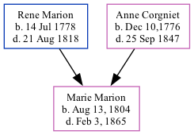

Marie Anne Marion 1804 - 1865
[ Home ] | [ Calendar ] | [ Surnames Index ] | [ Family History ]The child of Rene Marion (a baker) and Anne Corgniet (a tailoress), Marie Marion, the four times great-aunt of Michele Copp (née Phillips), was born in Saint Jacques, Nantes, Loire Atlantique, France in Aug 13, 18041,2. In 1850, she lived in St Michael and St Phillip, Charleston, South Carolina1. She arrived in Charleston, South Carolina in 1850.
She died in Feb 3, 1865.
Parents
- Rene Yves was born on Jul 14, 1778
- Anne Marie was born in Dec 10,1776
Citations
- 1850 United States Federal Census Online publication - Provo, UT, USA: The Generations Network, Inc., 2005.Original data - United States of America, Bureau of the Census. Seventh Census of the United States, 1850. Washington, D.C.: National Archives and Records Administration, 1850. M432,
- Passenger and Immigration Lists Index, 1500s-1900s Online publication - Provo, UT, USA: The Generations Network, Inc., 2006.Original data - Filby, P. William, ed.. Passenger and Immigration Lists Index, 1500s-1900s. Farmington Hills, MI, USA: Gale Research, 2006.Original data: Filby, P. William, ed.. Passe
Family Tree
Generated by ged2site. Last updated on Sep 18, 2024